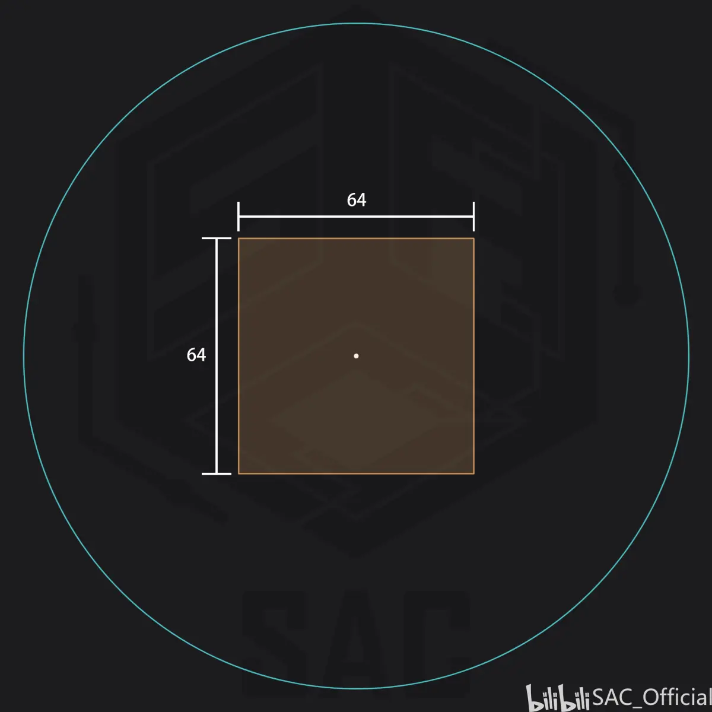
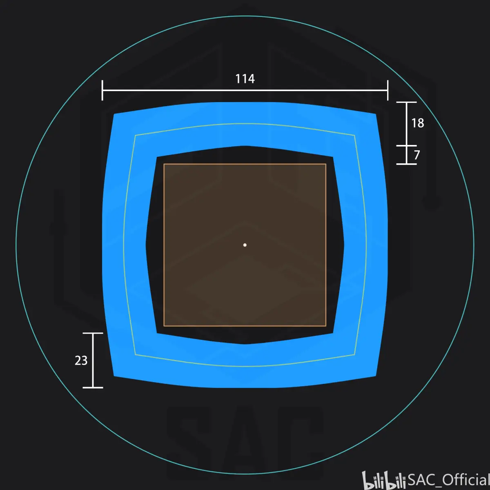
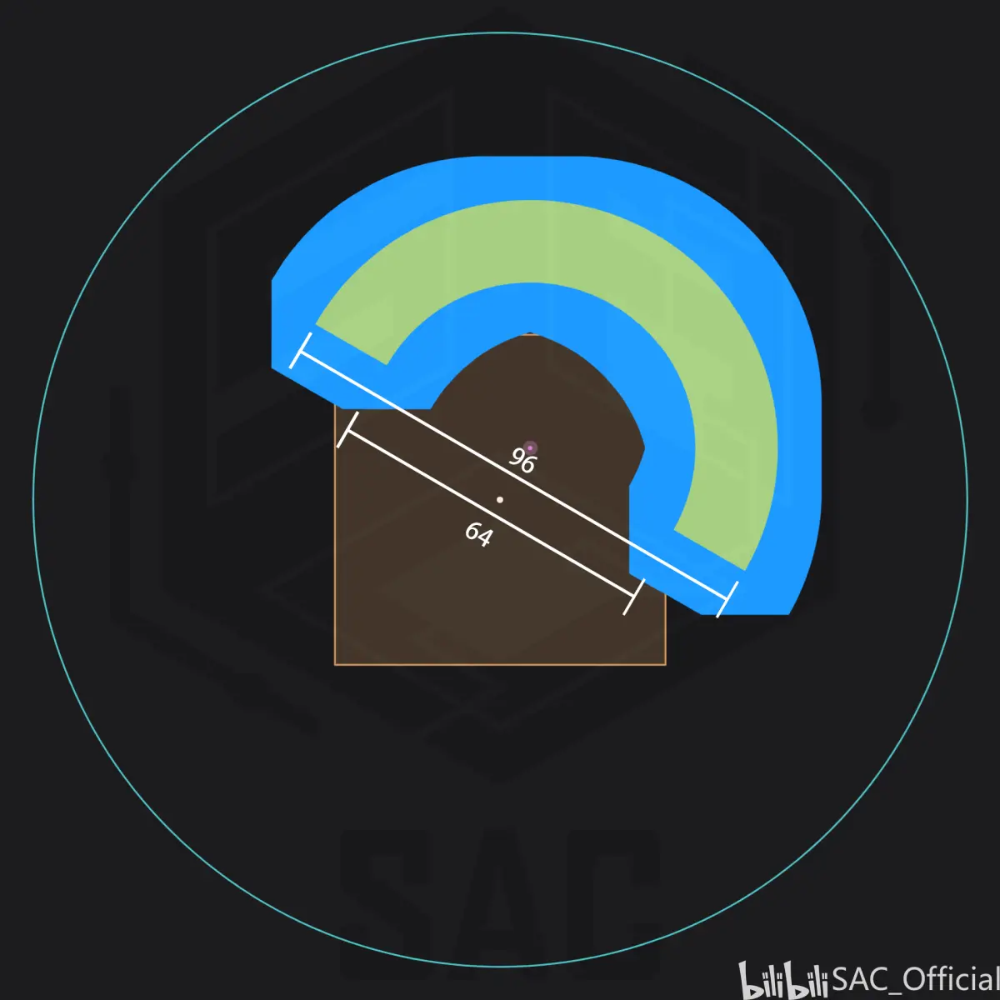
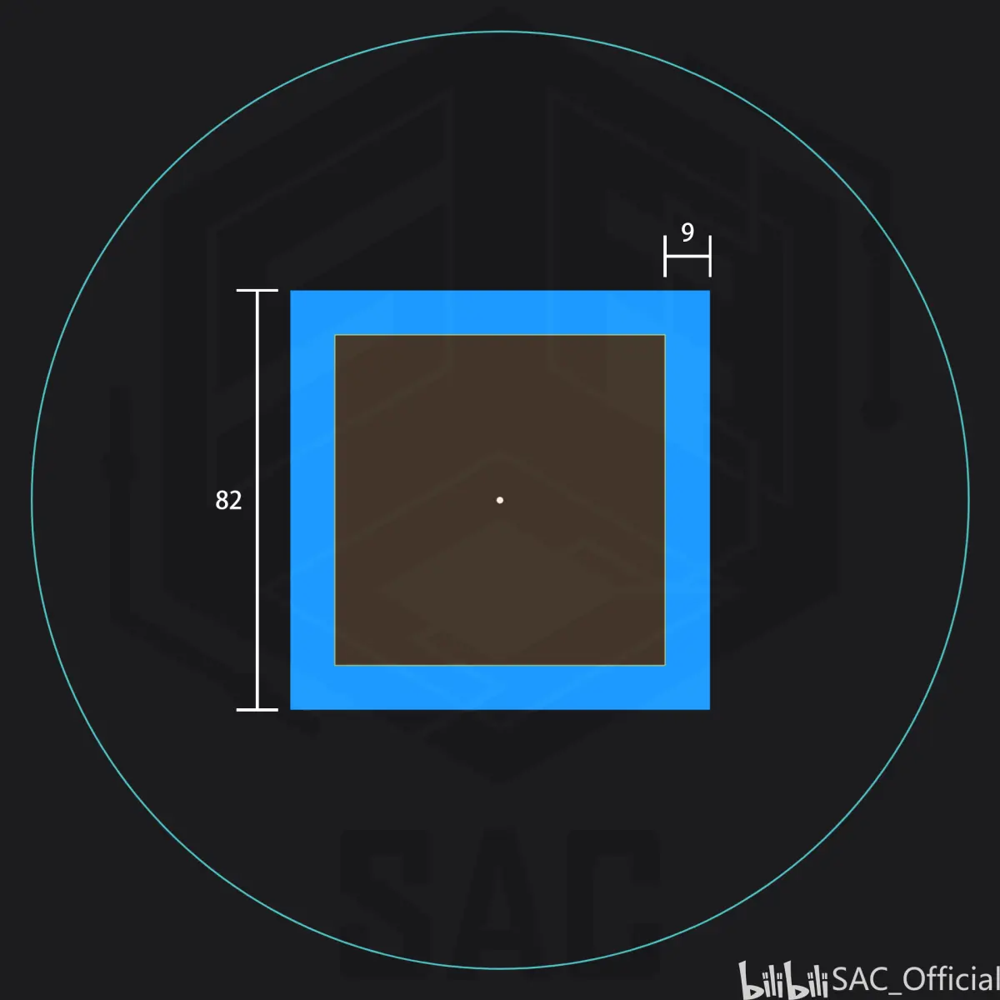
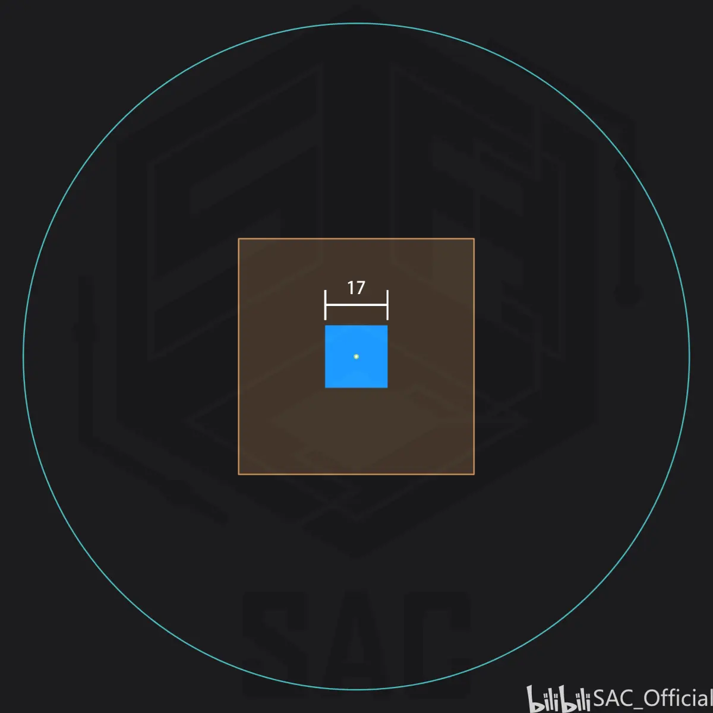
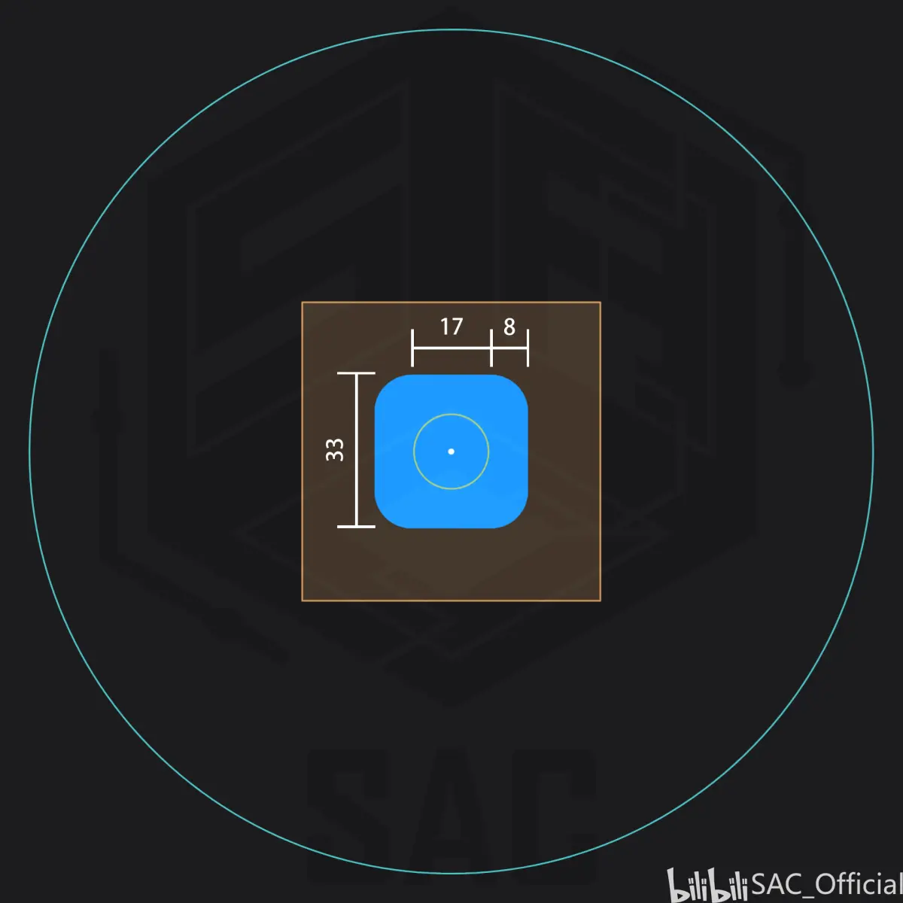
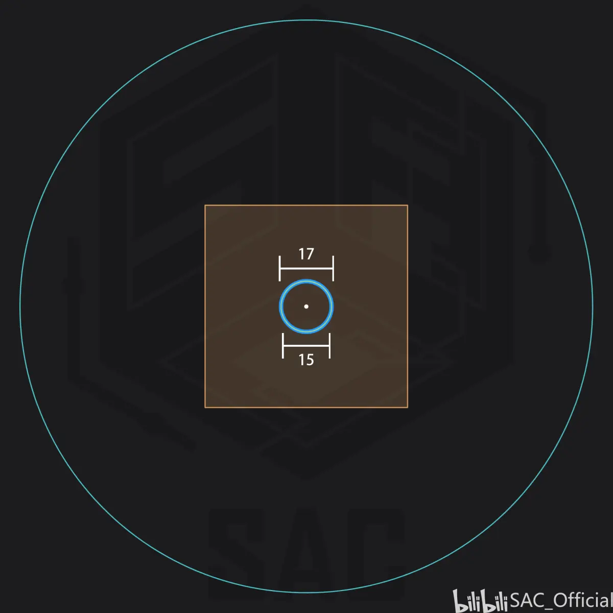

由于 MOJANG 曾经修改过袭击生成系统，且以后还可能会修改，而本文的 code digging 仅在 1.16.40.2 与 1.14.60.5 进行，因此本文的使用范围的下确界最大为 1.14.60.5 ，上确界最小为本文发布时的最后一个正式版。
当每波袭击生成时，会在 6gt 内依次尝试在 6 种不同的生成区域内寻找生成点，在前 5 种区域内会随机寻找 10 次，y 轴在村庄中心 ±16的范围内。在第六种区域内仅会随机 xz 轴的坐标。生成点通常为有碰撞箱的方块，第六种会有些许不同将会在下面说明。（在 1.16.200 后第 1、3、4、5、6 种生成点必须距离玩家 128 个内） 当找到生成点后，找寻过程会停止，若 6 种方式均找不到生成点，袭击直接结束。本文的目的主要在于阐明 6 种区域的形状。

如图，为一村庄俯视图，村庄长宽均为 64 格，橙色为村庄本体，白点为村庄中心，青色圆环为村庄半径。以下范围的示意图均在此村庄中进行，粉色会表示玩家位置，蓝色会表示生成区域，绿色会表示基准点形成的范围，绿色区域内也会生成。为了方便表示，下图内的颜色没有深浅之分，仅代表是否存在，而不是实际的概率密度。
1、

第一种生成区域的形状如上图，首先游戏会在村庄边界以相等的概率随机选取一 y 轴距离村庄中心 ≤8 格的点，然后沿着村庄中心到此点的连线向外延伸 16 格，再以此点为中心，在周围17^3的区域内随机选取村庄外一点判定是否可以生成，此过程循环 10 次，找到为止。

第二种生成区域的形状如上图，当玩家在村庄内或玩家距离村庄边界小于 16 格时，游戏会生成一个r\in [32,48]的随机半径，然后在以玩家位置为圆心，r 为半径，朝向村庄中心与玩家位置连线向外的半圆弧上以相等的概率随机选取一 y 轴距离村庄中心 ≤8 格的点，再以此点为中心，在周围17^3的区域内随机选取一点判定是否可以生成，此过程循环 10 次，找到为止。
上图为玩家相对村庄中心不同方向时区域 2 的形状。

第三种生成区域的形状如上图，首先游戏会在村庄边界以相等的概率随机选取一 y 轴距离村庄中心 ≤8 格的点，再以此点为中心，在周围17^3的区域内随机选取村庄外一点判定是否可以生成，此过程循环 10 次，找到为止。

第四种生成区域的形状如上图，首先游戏会在以村庄中心为圆心，半径 0.5 的圆上以相等的概率随机选取一 y 轴距离村庄中心 ≤8 格的点，即村庄中心。再以此点为中心，在周围17^3的区域内随机选取村庄内一点判定是否可以生成，此过程循环 10 次，找到为止。

第五种生成区域的形状如上图，首先游戏会在以村庄中心为圆心，半径 8 的圆上以相等的概率随机选取一 y 轴距离村庄中心 ≤8 格的点，再以此点为中心，在周围17^3的区域内随机选取村庄内一点判定是否可以生成，此过程循环 10 次，找到为止。

第六种生成区域的形状如上图，首先游戏会在以村庄中心为圆心，半径 8 的圆上以相等的概率随机选取一点，再在此点 xz 轴位置选取 y 轴最高处的固体方块或树叶下方或有固体方块夹层下的有碰撞箱方块判定是否可以生成。
（经测试，第六种生成方式可能仍然会在 xz 轴有随机，但尚未找到相关代码，仍然有待商榷）
Credit:
@_hhhxiao 承担了全部的代码挖掘工作
@莵道三室戸 提供了大量测试数据
@OEOTYAN 写文的